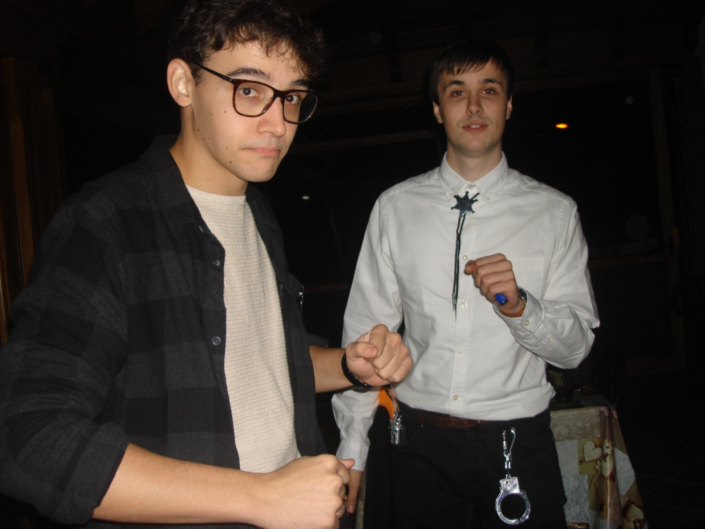

Luis Fernandez Suarez
- fecha de nacimiento: 2000-02-03
- lugar de nacimiento: Gijon"
- coordenadas: 43.5279, -5.6064, 64.2812
Fotos del familiar

Videos del familiar
Comentarios del familiar
Comentario por defecto para Luis Fernandez Suarez
Segundo comentario para corroborar su correcto funcionamiento